| 日付 | 2018年8月19日（日） |
|---|---|
| 山域 | 日光周辺 |
| メンバー | 家族（妻、長女・7歳、長男・5歳） |
| 山行形態 | 子連れ日帰り |
| アクセス | 車 |
| ルート (Map) | ゴンドラ山頂駅 (9:11) - (11:17) 日光白根山 (12:26) - (13:11) 弥陀ヶ池 (13:46) - (14:18) 避難小屋 - (14:56) ゴンドラ山頂駅 |
本日はプールにでも行こうと考えていたが、
一昨日に行ったため一日予定が空いた。
幸い天気は全国的に晴予報なので、日光白根山に行くことにする。
標高の高い山なので、8月でも暑くはなさそうだ。
以前日光白根山に来た時は菅沼登山口から登ったが、今回はゴンドラを利用する。
駐車場に車は多いが、幸い近くに停めることができた。
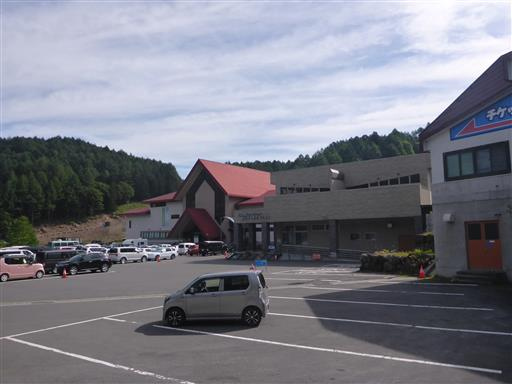
チケットを買ってゴンドラに乗り込む。
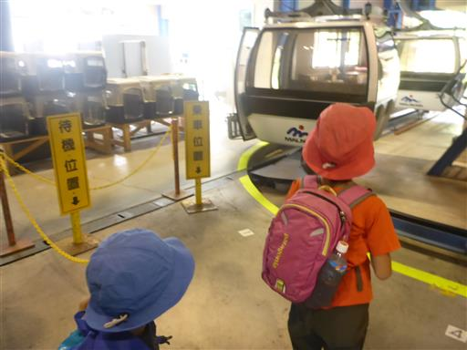
ゴンドラからは素晴らしい景観が広がる。

なんとゴンドラとリフトが立体交差している。危険はないのだろうか？
この辺りはスキー場が併設されており、この時期は草スキーをやっている人がいる。
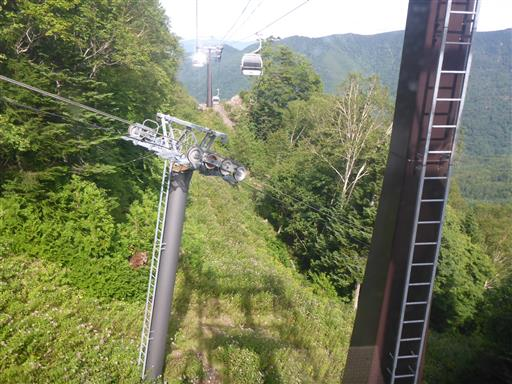
眼下には黄色い花と白い花が大量に咲いている。いずれも地味な花だ。
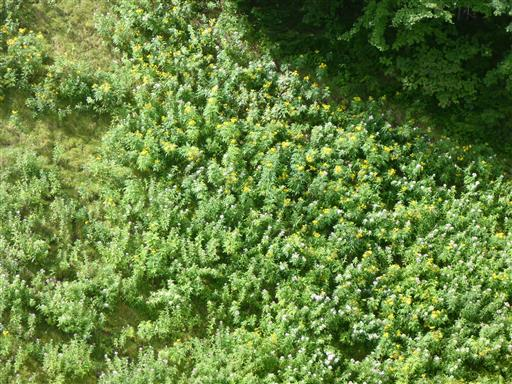
山頂駅に到着。標高2000m。
正面に日光白根山が聳えている。娘はゼリーの形と言っている。確かにそんな形だ。
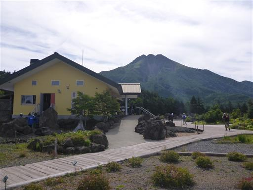
なんとこんな場所に足湯がある。
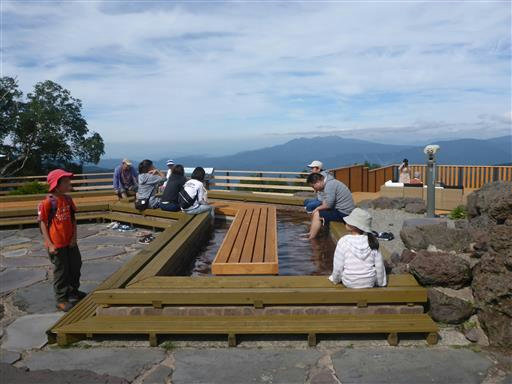
目の前には遠くの山々が見渡せる。
左の山はこの間、麓でキャンプを行った上州武尊山だ。
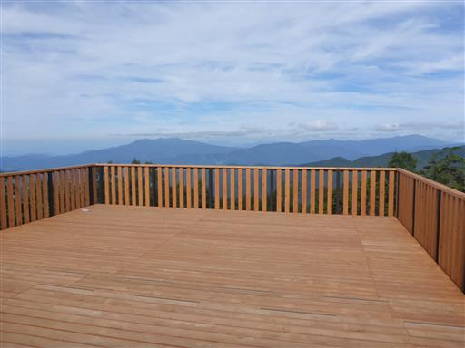
背後には聳え立つ日光白根山。
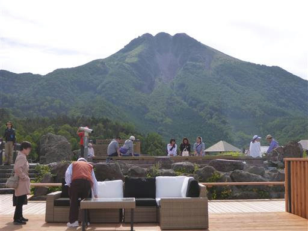
こちらは燧ヶ岳。

なんとソファまで置かれている。
素晴らしい場所だが時間の余裕があまりないため、ここではゆっくりせずに出発する。
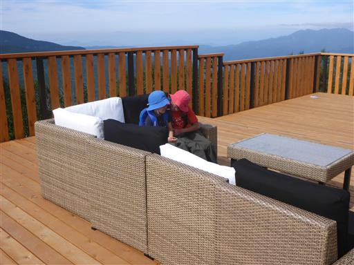
周囲は花が植えられており散策できるようになっている。
登山客以外でも楽しめそうな場所だ。
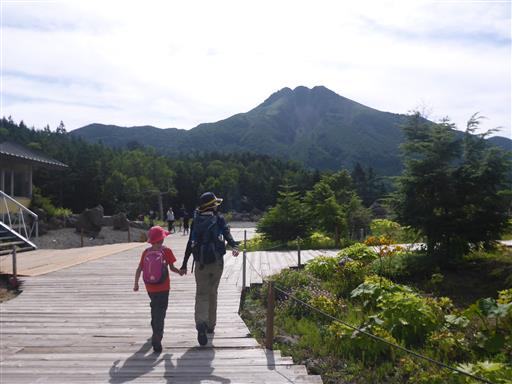
鳥居を潜って登山道に入っていく。
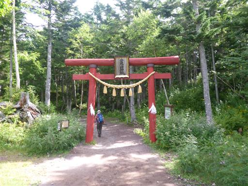
しばらく歩くと二荒山神社に到着。日光男体山の麓にある神社と同名だ。
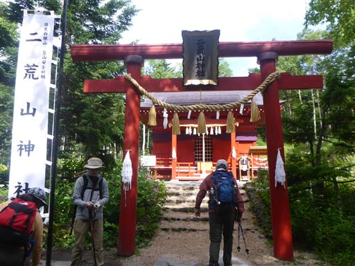
娘がお小遣いでおみくじを購入。末吉だった。
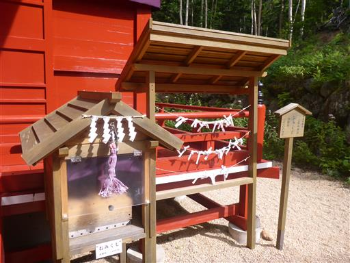
動物除けの扉を開けて中に入る。
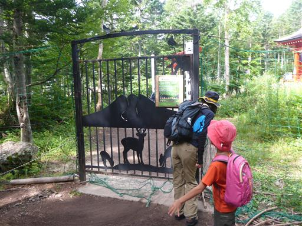
高山とはいえ最初は深い森の中の登山道が続く。
展望は全く開けない。
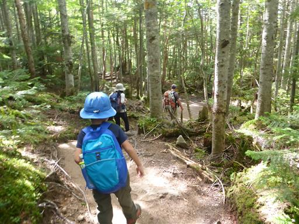
陽の光を浴びて葉や苔が光っている。
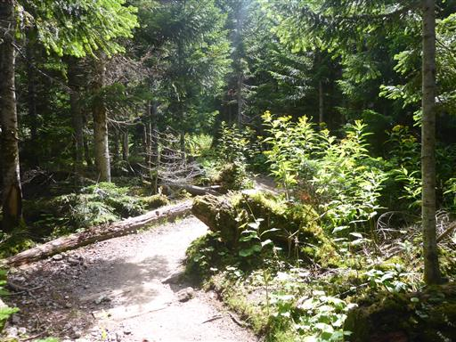
渋滞というほどではないが、それなりに登山者の数は多い。
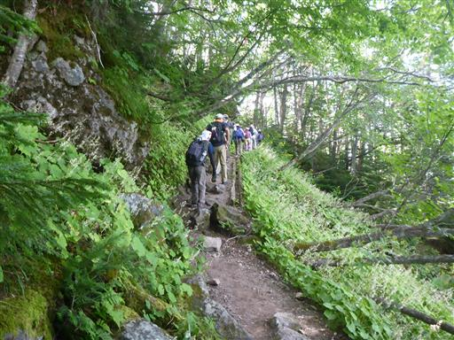
ところどころで道を譲っていただく。
こちらは子連れで速かったり遅かったり、なかなかペースが安定しない。
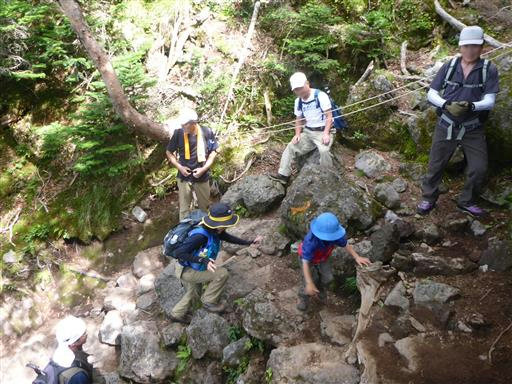
オヤマリンドウだろうか？
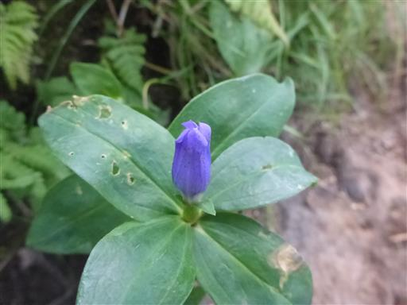
オトギリソウ。
全体的に花の数は多くないが、ところどころに咲いている。
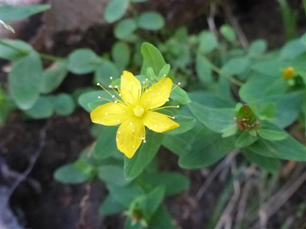
森林限界を超えたのか、火山の影響か分からないが、
木がなくなって一気に視界が広がる。
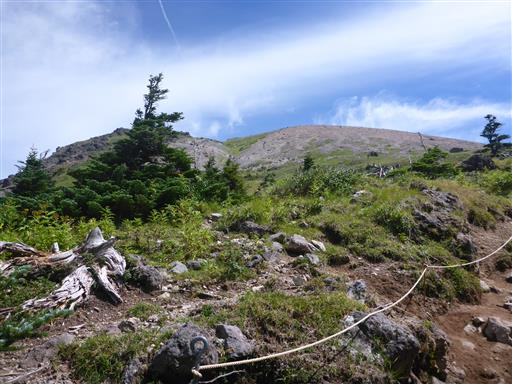
近くに見える山頂部目指して登って行く。
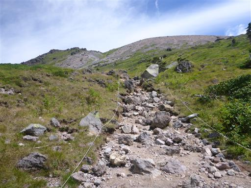
周囲の景観は庭園のようで美しい。
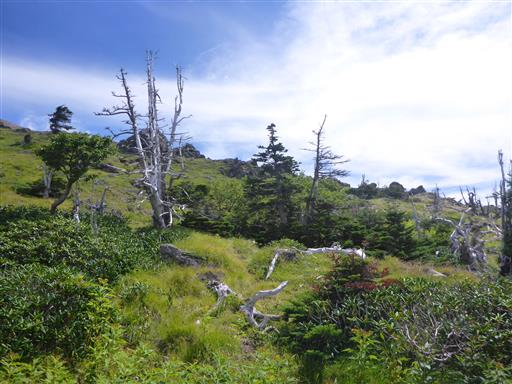
足元にはコケモモの実がなっている。

歩いてきた道を振り返る。多くの山々が折り重なっている。
右手の目立つ山は皇海山だ。
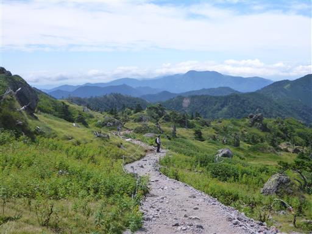
この辺りは火山特有の砂が堆積した登山道で非常に登りにくい。
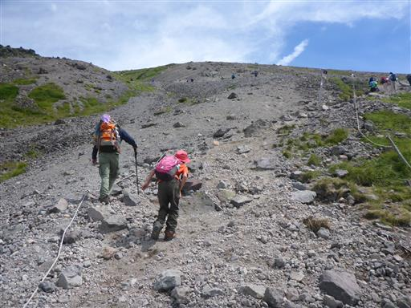
こちらは錫ヶ岳。いつか日光白根山から錫ヶ岳、皇海山へと縦走してみたいものだ。

途中から娘と先行して登って来ていたのだが、眼下に息子を発見。
そこそこのペースで登って来ているようだ。
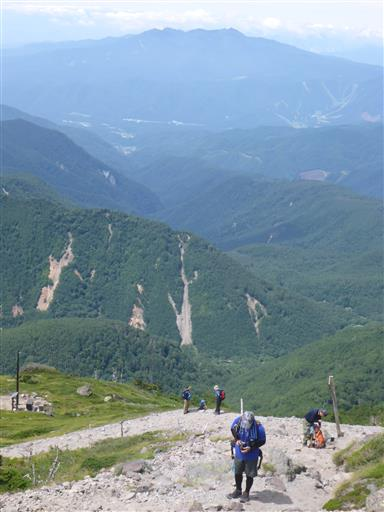
巨大な岩が散在している。独特の風景だ。
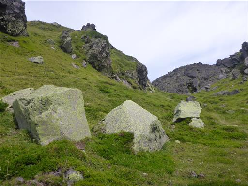
山頂部の一角に到着。目の前に見えるのは噴火口だ。
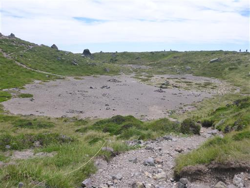
山頂近辺は多くの人で賑わっている。

山頂に向けて最後の一登り。岩場を乗り越えていく。
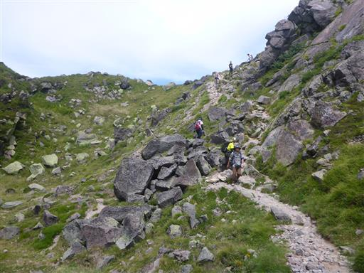
山頂部はいくつものピークがあり複雑な形をしている。
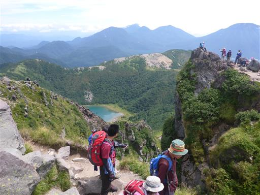
日光白根山に到着。標高2578m。6年振りの山頂だ。
5分ほどの遅れで息子も登ってくる。
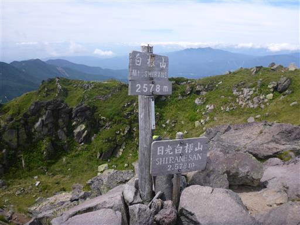
狭い山頂は混雑しているため、お隣のピークに移動して昼食をとることにする。

適当な場所に腰を下ろす。山頂は狭いが周辺が広いので助かる。
暑くもなく寒くもなく、ちょうど良い気温だ。風が無いのが助かる。
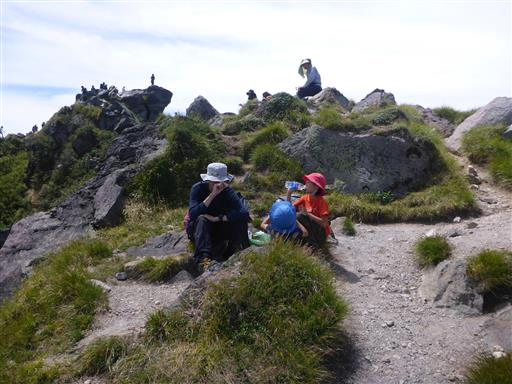
息子はトンボ捕りに興じている。
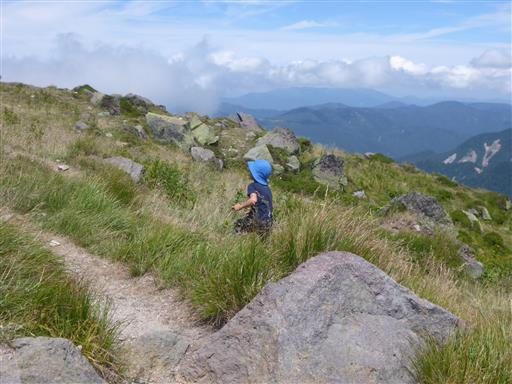
しかし周辺は崖だらけなので恐ろしい。崖には近づかないよう伝えておく。
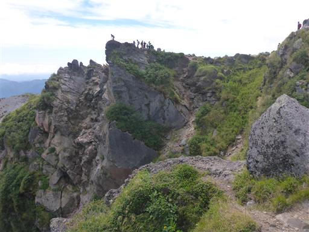
トンボの次は岩登り。
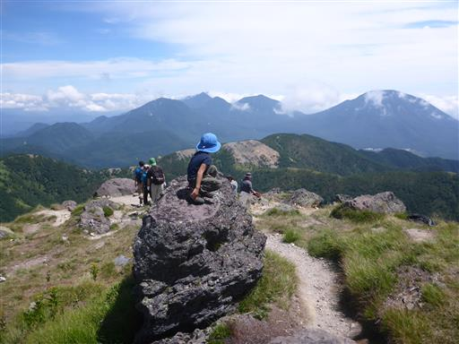
ちょっと雲が出ているが、男体山と中禅寺湖が見えている。
前回来た時は男体山が全く見えなかったので、念願の展望だ。
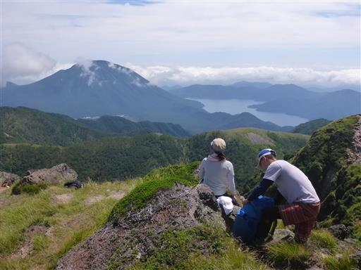
眼下に見えるのは五色沼。美しい青色だ。
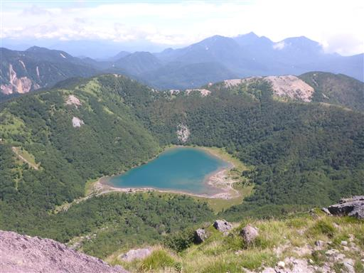
遠くの尾根の上に湿原が見えている。鬼怒沼湿原だろうか？
いつか行ってみたい場所だ。
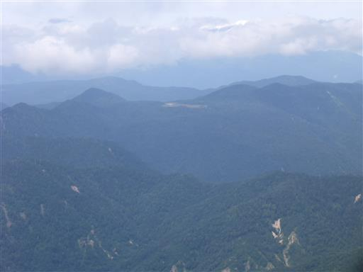
景色を堪能したら、眼下の弥陀ヶ池目指して下山を開始する。
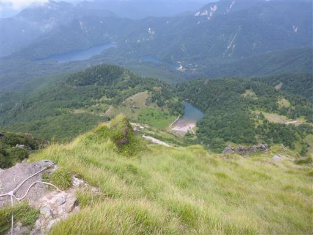
下山道も岩がちな地形で素晴らしい景観だ。
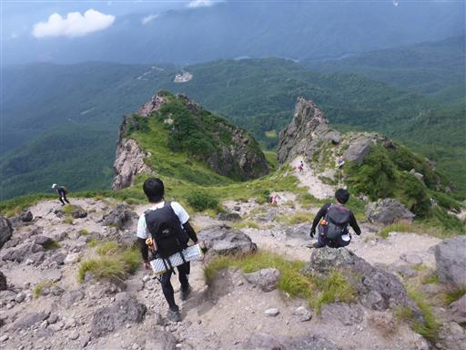
急斜面の下りが続く。手を使いながら下りていく。
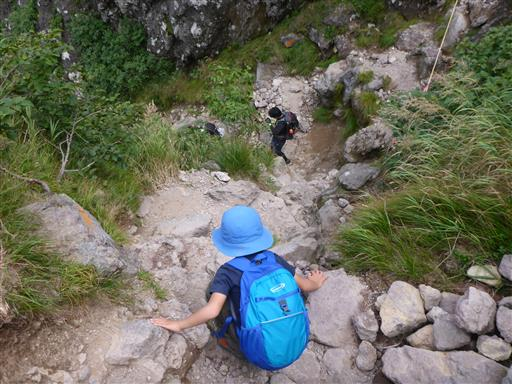
山頂部を振り返る。以前は登りに使った道のはずだが、あまり記憶に残っていない。
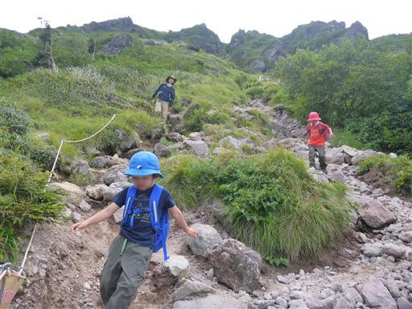
シャクナゲ地帯を通過。花が咲くときれいだろう。
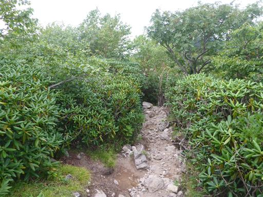
岩の道を慎重に下る。こういった場所は慣れが必要だ。
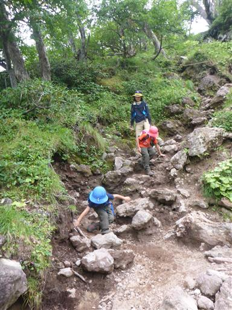
弥陀ヶ池に到着する。池から霧が発生している。
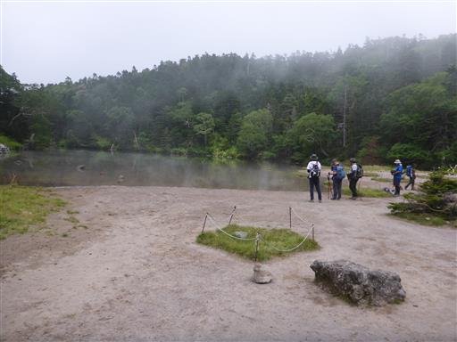
振り返ると山頂はもう雲の中だ。今山頂にいたら何も見えないだろう。
今日は思ったより天候が悪く、山頂で展望があったのはラッキーだった。
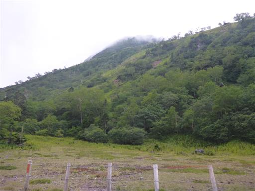
弥陀ヶ池でおやつを食べた後歩き始めたのだが、
すぐに息子が気持ち悪いと言い出したため休憩。
山頂でもおやつを食べまくっていたため、恐らく食べ過ぎだろう。
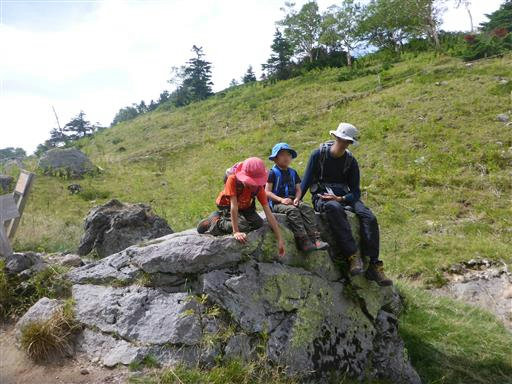
落ち着いたら、下山を開始する。ゴンドラ乗り場までにはあと1時間ほど歩く必要がある。
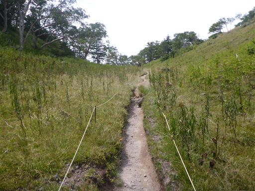
カニコウモリの群落。地味な花だ。
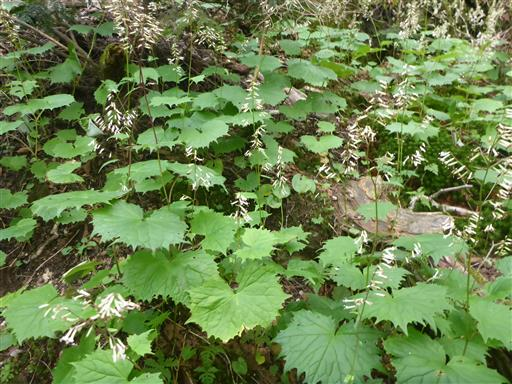
樹林帯の中を歩く。
子供はトイレに行きたいと言い出したり、こけて手当てをしたりで、一向にペースが上がらない。
うちの登山は登りは順調なのに、下りはいつも時間がかかる。
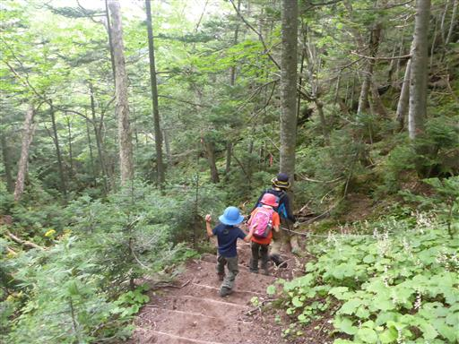
七色平に到着。電気柵で厳重に囲まれているが、花の時期には何が咲くのだろうか？
避難小屋に到着。早速中を覗く。
かなり荒れた避難小屋で利用価値は低そうだ。
この辺りも空は真白になってきた。天気は下り坂だ。
無事ゴンドラ乗り場まで戻ってくる。
ゴンドラを下りたところでご褒美にアイス購入、息子はアイスの替わりにおもちゃの剣だ。
コースを変えての2度目の日光白根山だったが、やはり素晴らしい山だった。
息子の体力はなかなかアップせず、今後高い山に行くためには
これくらいの山はもう少しサクッと登ってほしいところだ。